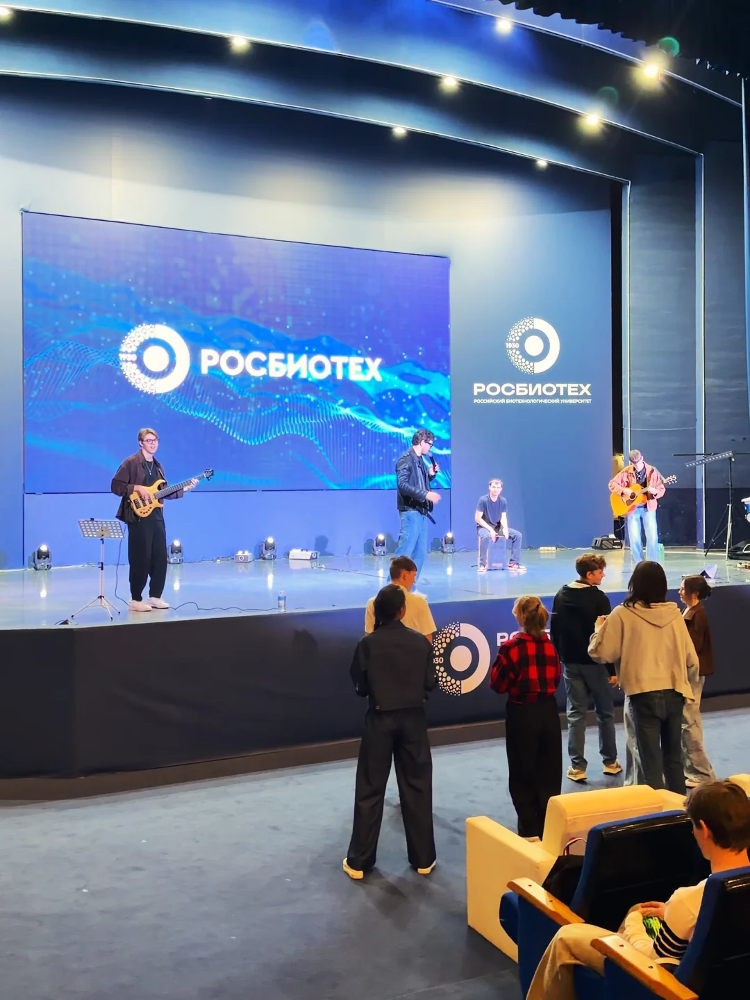

Один из вариантов
Акустика на welcome, первый танец вживую, затем три блока на танцполе с паузами под тосты, ужин и номера ведущего. Подробнее — «Кавер-группа на свадьбу».
AirПоцы · формат
У AirПоцы — три блока по 30 минут. Группа не занимает весь вечер: блоки встраиваются в тайминг ведущего, а между ними идёт ваша программа.

Формат
Праздник — это не только танцы. Есть тосты и поздравления, ужин, номера ведущего, на корпоративе — официальная часть и награждение. Поэтому живой сет у нас разбит на три блока по 30 минут, и каждый ставится туда, где он нужен вечеру.
Когда ставить блоки и как распределить паузы, решаем заранее вместе с вами и с ведущим. Между блоками идёт ваша программа.
До первого блока
Ориентиры
Акустика на welcome, первый танец вживую, затем три блока на танцполе с паузами под тосты, ужин и номера ведущего. Подробнее — «Кавер-группа на свадьбу».
Сбор гостей и welcome-бар, открытие вечера, ужин и итоги года, живой сет AirПоцы, живое караоке, песня от руководителя и танцы. Подробнее — «Кавер-группа на новогодний корпоратив».
Это ориентиры, а не шаблон: итоговый тайминг собираем под ваш вечер, площадку и ведущего.
Чек-лист
Ещё о группе
Вопросы
Три блока по 30 минут. Они встраиваются в тайминг ведущего, а между ними идёт ваша программа.
Между блоками идёт ваша программа — тосты, ужин, номера ведущего, на корпоративе — официальная часть и награждение. Чем заполнить паузы, решаем заранее вместе с вами и с ведущим.
Заранее: саундчек проходит до прихода гостей, чтобы к началу вечера всё уже звучало.
Акустический сет на welcome — отдельный формат. При бронировании свадьбы до 30.11 сет 20 минут идёт бонусом, для корпоратива бонусом идёт акустика на welcome.
Заявка
Оставьте данные — вернёмся с условиями под вашу дату. Или позвоните: +7 958 541-00-41.
Спасибо! Мы свяжемся с вами, чтобы обсудить дату, площадку и плейлист вечера.
Если хочется быстрее: +7 958 541-00-41 или WhatsApp.